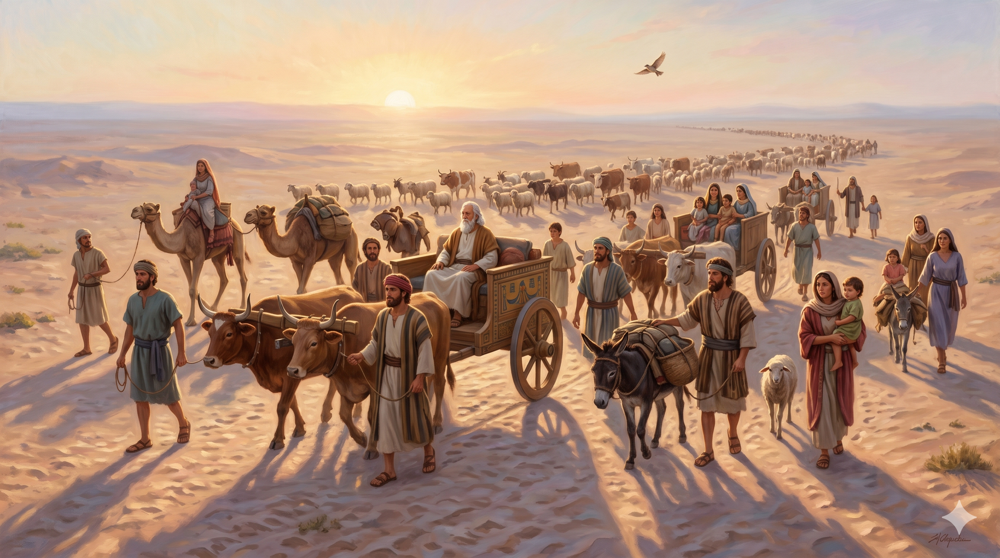

별빛 가득한 브엘세바의 밤 — 아버지 이삭의 하나님께 제사를 드리고, 천막 앞에서 환상 중 하나님의 음성을 듣는 늙은 야곱
이스라엘이 모든 소유를 이끌고 떠나 브엘세바에 이르러 그의 아버지 이삭의 하나님께 희생제사를 드리니 그 밤에 하나님이 이상 중에 이스라엘에게 나타나 이르시되 야곱아 야곱아 하시는지라 야곱이 이르되 내가 여기 있나이다 하매 하나님이 이르시되 나는 하나님이라 네 아버지의 하나님이니 애굽으로 내려가기를 두려워하지 말라 내가 거기서 너로 큰 민족을 이루게 하리라 내가 너와 함께 애굽으로 내려가겠고 반드시 너를 인도하여 다시 올라올 것이며 — 창세기 46:1–4
요셉이 살아 있다는 소식을 들은 야곱은 "내 아들 요셉이 지금까지 살아 있으니 내가 죽기 전에 가서 그를 보리라"(창 45:28)며 길을 나섭니다. 그런데 헤브론을 떠나 남쪽으로 내려오던 그는, 약속의 땅 끝자락인 브엘세바에 이르러 잠시 멈춥니다. 거기서 대뜸 애굽으로 직행하지 않고 먼저 "아버지 이삭의 하나님께" 희생제사를 드립니다. 이것은 매우 중요한 장면입니다. 브엘세바는 아브라함이 에셀 나무를 심고 영원하신 여호와의 이름을 불렀던 자리(창 21:33)요, 이삭도 하나님의 나타나심을 경험했던 자리(창 26:23–25)입니다. 언약의 땅을 떠나 이방으로 내려가기 직전, 그는 먼저 선조의 제단 앞에 엎드립니다. 중대한 결정 앞에서 가장 먼저 할 일은 움직이는 것이 아니라 멈추어 여쭙는 것입니다.
그 밤에 하나님이 환상 중 나타나십니다. "야곱아 야곱아." 두 번 부르신 이 호칭은 하나님께서 아주 중요한 순간에만 사용하시는 방식입니다 — 아브라함을 모리아에서(창 22:11), 모세를 떨기나무 불꽃 속에서(출 3:4), 사무엘을 성전에서(삼상 3:10) 그렇게 부르셨습니다. 그리고 주시는 약속은 네 가지입니다. ① "애굽으로 내려가기를 두려워하지 말라" — 이전에 아브라함에게 애굽은 실수의 자리였지만, 야곱에게는 예비된 피난처가 될 것이다. ② "내가 거기서 너로 큰 민족을 이루게 하리라" — 약속의 땅을 떠나는 것처럼 보이지만, 오히려 거기서 민족이 태동한다. ③ "내가 너와 함께 애굽으로 내려가겠고" — 임마누엘의 약속, 하나님이 그 이방 땅에도 동행하신다. ④ "반드시 너를 인도하여 다시 올라올 것이며" — 내려감은 결코 끝이 아니다, 출애굽의 예고가 이미 여기 심겨진다. 야곱은 두려움 속에 내려가는 것이 아니라 언약의 약속을 품에 안고 내려가게 됩니다.

새벽이 밝아 올 무렵, 아들들과 손자들, 아내들, 가축떼가 모두 행렬을 이루어 애굽으로 향하는 대가족 — 수레에 오른 야곱의 얼굴에는 두려움 대신 평안이 깃들어 있다
인생은 때때로 약속의 땅을 떠나야만 하는 길목에 섭니다. 익숙한 자리, 안정된 직장, 정든 교회, 살던 도시를 떠나 낯선 곳으로 내려가야 하는 시기가 옵니다. 그런 선택의 갈림길에서 우리는 먼저 브엘세바를 기억해야 합니다 — 떠나기 전, 제단을 쌓으십시오. 아버지 세대가 하나님의 이름을 불렀던 그 자리, 당신의 신앙이 시작된 그 자리를 먼저 거쳐 가십시오. 서둘러 결정하지 말고 하루 밤은 멈추어 여쭙고 떠나야 합니다. 하나님은 여쭙는 자에게 여전히 "야곱아 야곱아" 부르시며 말씀하시는 분이십니다. 결정 전에 드린 제사는 결정 뒤의 모든 길을 거룩하게 합니다.
그리고 기억하십시오. 하나님의 인도 속에 내려가는 자리에는 "내가 너와 함께 내려가겠고 반드시 다시 올라오게 하리라"는 두 개의 약속이 따라갑니다. 이 땅에서 겪는 모든 '애굽' — 낯선 환경, 고통의 시즌, 이해되지 않는 내려감에는 반드시 상승이 예비되어 있습니다. 하나님은 내려감만 명하시는 분이 아니라, 내려간 자리에서 민족을 일으키시고, 마침내 다시 올라오게 하시는 분입니다. 오늘의 애굽이 두렵습니까? 두려워하지 마십시오 — 하나님은 이미 애굽 아래까지 먼저 내려가 계십니다.
내려감이 끝이 아니라, 동행의 시작입니다.
아버지의 제단 앞에 먼저 엎드린 자에게,
하나님은 오늘도 "두려워하지 말라"고 말씀하십니다.